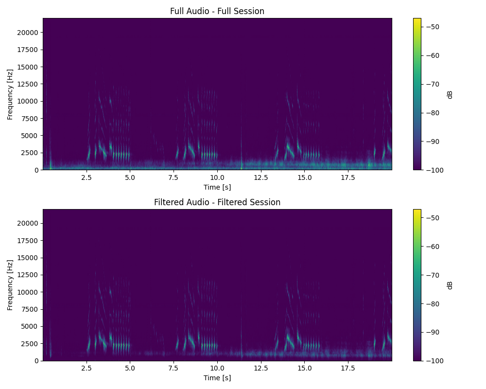

Spectrograms
Using PAVES you can create spectrograms from the recordings. This allows users to visualize their recordings and see their frequencies. (Example below is of a Northern Red Cardinal).

We present the a new method capable of localizing and identifying birds in relation to a device. Project AVES is a multifunctional, autonomous device capable of monitoring environmental conditions and bird populations in a variety of ecosystems. The core functions of the device include recording and analyzing bird calls while simultaneously collecting local data such as soil moisture, and temperature, as well as air temperature, moisture, and humidity.
The goal of the project is to create a device that will be placed in various environments for bird monitoring purposes. Through audio detection, the device will be able to identify what species of birds are in the area as well as localize the audio to determine the location of where the bird is calling from. This will allow for species monitoring, population monitoring, and migration tracking. The device will also host a variety of sensor inputs that can monitor environmental data such as soil moisture, humidity, and temperature.
Using PAVES you can create spectrograms from the recordings. This allows users to visualize their recordings and see their frequencies. (Example below is of a Northern Red Cardinal).

Through the localization function you are also able to hear the recordings and save them locally to be analyzed later.(Example below is of a Northern Red Cardinal).
PAVES determines the direction of incoming bird sounds using a Time Difference of Arrival (TDOA)–based localization approach. Multiple microphones are arranged in an array configuration, and when a bird call reaches the device, each microphone detects the sound at slightly different times. By computing these time delays between the signals, the system derives the angle of incidence of the sound wave relative to the array. Using four synchronized microphone boards and applying far-field assumptions (where sound waves are treated as planar), PAVES calculates the intersection of the directional vectors from each array to estimate the precise location of the sound source. This enables accurate, real-time localization of birds without requiring large or complex hardware setups.
To identify bird species from recorded audio, PAVES integrates BirdNET, a deep neural network developed by the Cornell Lab of Ornithology and Chemnitz University of Technology. BirdNET is trained on hundreds of thousands of bird vocalizations, enabling it to recognize more than 6,000 species worldwide. When a recording is captured by PAVES, the system extracts its spectrogram—a visual representation of frequency over time—and passes it to BirdNET’s neural model. The model analyzes acoustic patterns and outputs the most probable bird species along with a confidence score. This allows PAVES to automatically tag and classify recordings, providing users with accurate and data-driven bird identifications in real time.
Each detection made by PAVES produces a detailed data record describing the identified bird and its acoustic signature. For every event, the system logs:
The example shown below illustrates a detection of a Great-tailed Grackle approximately 1.5 meters (5 ft) from the device at an angle of 90°, demonstrating accurate localization and confident identification even at close range.
2025-08-08 21:20:06 | Great-tailed Grackle | Quiscalus mexicanus | [-0.015118896969441398, 0.9998857029453054] | 90.87° | confidence=1.00 | dominant_freq=43.1 Hz | band_used=1-1000 Hz | Likely here: Yes
2025-08-08 21:20:12 | Great-tailed Grackle | Quiscalus mexicanus | [-0.021082049551407692, 0.9997773183150845] | 91.21° | confidence=0.97 | dominant_freq=43.1 Hz | band_used=1-1000 Hz | Likely here: Yes